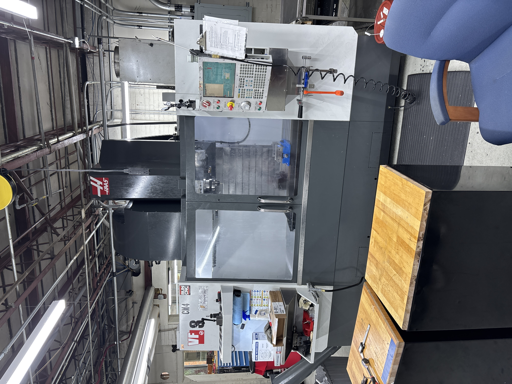
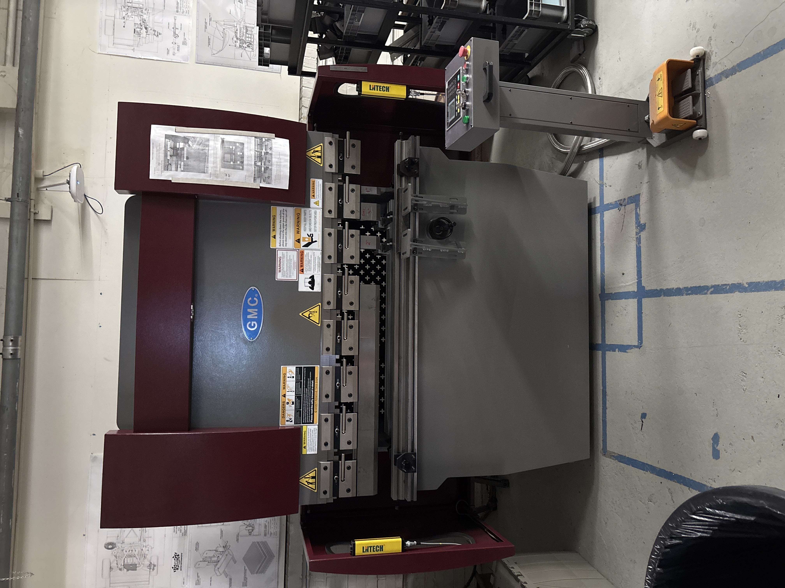
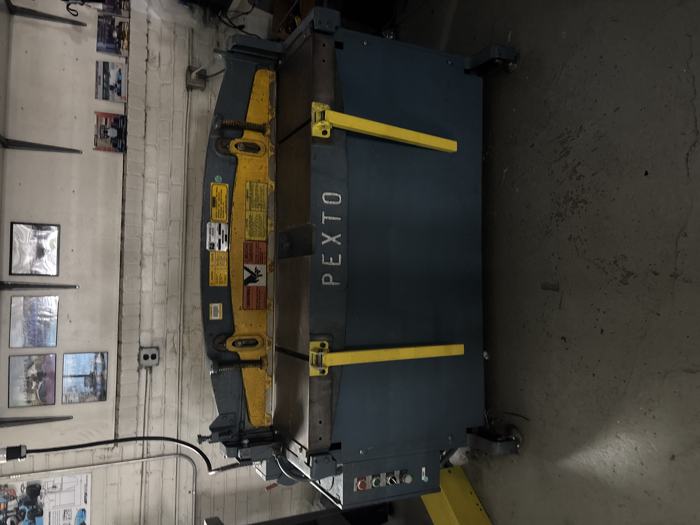
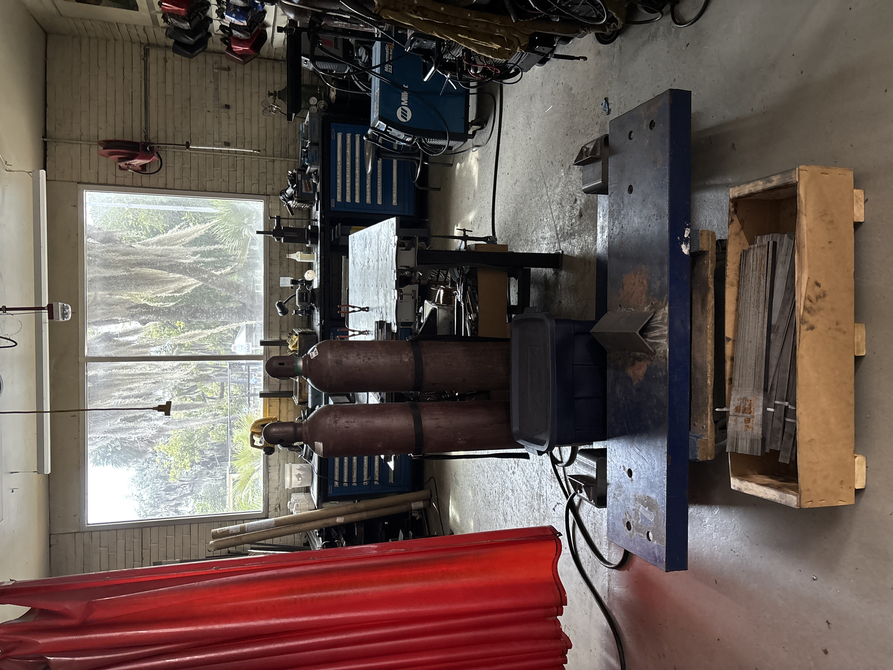

Manual Machining
Manual Knee Mill
Teach students the purpose, controls, setup considerations, workholding awareness, tool engagement, and safe operating approach for manual milling operations.
Manufacturing Instruction · Shop Leadership · Hands-On Fabrication
Supporting students in a hands-on manufacturing environment by teaching safe equipment use, demonstrating machining and welding processes, troubleshooting fabrication issues, and helping students turn design intent into real manufactured parts.
Role Overview
In the Design and Manufacturing Lab, I help students bridge the gap between CAD/design work and practical fabrication. My role involves explaining how machines work, demonstrating safe operating procedures, supporting process selection, and helping students understand how design choices affect manufacturability.
I teach and support students on manual machining, sheet metal equipment, and welding workflows. For CNC work, I demonstrate the process and operate the machine for student projects, giving students exposure to CNC machining while maintaining safe and controlled operation.

As a DML Teaching Assistant, I help students use manufacturing equipment safely and effectively. This includes explaining machine setup, demonstrating proper operation, answering technical questions, and guiding students through practical fabrication decisions.
The role has strengthened my ability to communicate technical information clearly, adapt my explanations to different student experience levels, and make quick engineering judgments in a shop environment where safety, accuracy, and manufacturability all matter.
A design is only useful if it can be built. This role has helped me think like a manufacturing-aware engineer: understanding machine limitations, setup constraints, process selection, material behavior, and the human side of teaching others to build safely.
Break down machine purpose, setup, and safe operating procedure.
Show proper techniques before students attempt fabrication tasks.
Help students connect design intent to the correct manufacturing process.
Assist with setup, part holding, tool choice, process issues, and fabrication mistakes.
Keep students focused on safe practices around equipment, tooling, and hot work.
Equipment and Processes
Teach students the purpose, controls, setup considerations, workholding awareness, tool engagement, and safe operating approach for manual milling operations.

Support student understanding of lathe operation, workholding, tool engagement, cylindrical part features, facing, turning, drilling, and safe turning practices.
Demonstrate CNC machining workflow and operate the CNC for student work when required. This gives students exposure to CNC manufacturing while keeping machine operation controlled and safe.

Introduce students to bend setup, part orientation, forming considerations, and safe use of sheet metal forming equipment.

Teach students how shearing supports fabrication workflows, including cut planning, material handling, and safety around sheet metal cutting equipment.

Show students the welding area, demonstrate GMAW welding techniques, and guide students as they try welding while reinforcing safety, setup, and process awareness.
Capabilities
Explaining machine operation, fabrication workflows, equipment purpose, and safe shop practice.
Teaching students with different experience levels and translating complex processes into clear steps.
Manual milling, turning, CNC workflow, setup thinking, workholding, and process limitations.
Sheet metal forming, shearing, welding demonstrations, troubleshooting, and design-to-build guidance.
Engineer’s Takeaway
This role has reinforced that manufacturability is not an afterthought. The best design still has to be fixtured, machined, formed, welded, inspected, and assembled by real people using real equipment. Teaching students in this environment has made me more aware of the practical decisions that turn a drawing or CAD model into a usable part.
It has also strengthened my leadership and communication skills. I have learned how to guide students through uncertainty, explain technical processes clearly, reinforce safe habits, and help them build confidence around manufacturing equipment.